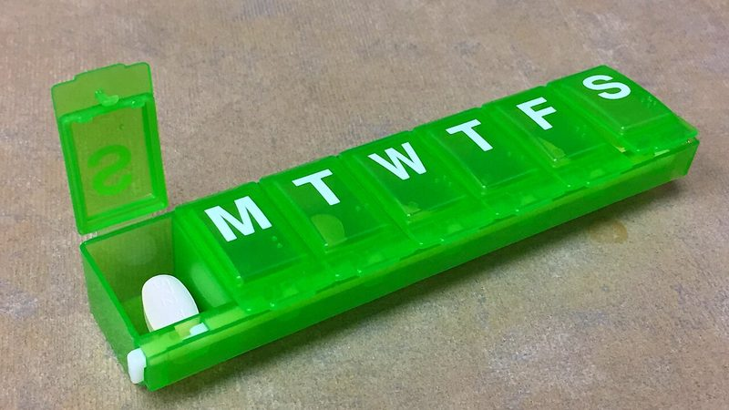

Reviewed by amyloidosis specialists
Exactly one H1 · pattern “{name}: information, clinical trials and community support”Amyloidosis: information, clinical trials and community support
Plain-language guidance on ATTR and AL amyloidosis, a searchable directory of active clinical trials near you, and the lived experience of patients and caregivers — free, and no login required.
- Active trials
- 42
- Reviewed articles
- 186
- Specialist centers
- 26
Latest amyloidosis news
Research, access and community updates, dated and clinician-checked.
Upcoming amyloidosis sessions
Free, live, and recorded if you cannot make it.
- Ask the specialist: living with cardiac amyloidosis 19:00–20:00 BST Online
- Newly diagnosed? A starter session for patients and carers 18:30–19:30 BST Online
- Family screening and genetic counselling Q&A 17:00–18:00 BST Online + Manchester
Where would you like to start?
Updated 12 July 2026
-
Clinical trials
Search 42 active amyloidosis studies by location, phase and eligibility.
Browse trials -
Learn the basics
Symptoms, types, diagnosis and treatment — in language you can use.
Start learning -
Community stories
Video and written experiences from patients, carers and families.
Hear from others -
Find an expert
26 specialist centers and clinicians, searchable by country.
Search centers
Previous spotlight series
Learn more about our Amyloidosis Program Spotlight Series
Visit a featured microsite to meet the program, explore its sessions, and access its resources.
Independent, funded, and reviewed
oneVoice Amyloidosis is supported by an independent medical education grant from Pfizer. Funders have no editorial control. Read our editorial policy
Latest, reviewed
Every article is checked by a clinician before publication.
-
Diagnosis 6 min read
The 5 tests used to confirm ATTR amyloidosis
What each test looks for, what to expect on the day, and the questions worth asking.
Reviewed by Dr A. Okafor, MD
-

Treatment 9 min readLiving with a stabilizer: side effects and daily routine
Practical strategies from people two or more years into treatment.
Reviewed by Dr L. Haugen, PhD
In their words
“It took four years and six doctors to get my diagnosis. I want the next person to find it in four weeks.”
Marta R. — living with ATTR-CM, Valencia
Illustrative photography. Name changed at their request.
For clinicians & researchers
Trial data, referral pathways and the current literature
Filter 42 open studies by phase and site, download the 2026 diagnostic pathway, or refer a patient to a specialist center.
New trials and articles, once a month
No promotions, ever. Unsubscribe in one click. Read our privacy notice.